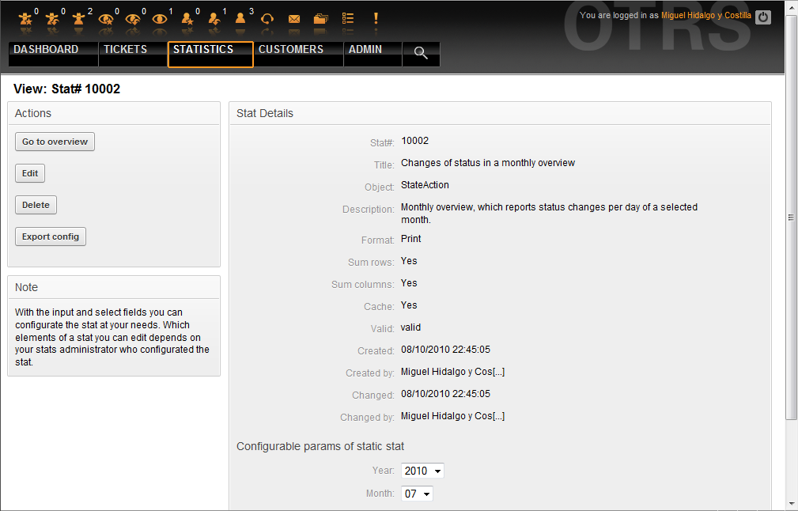
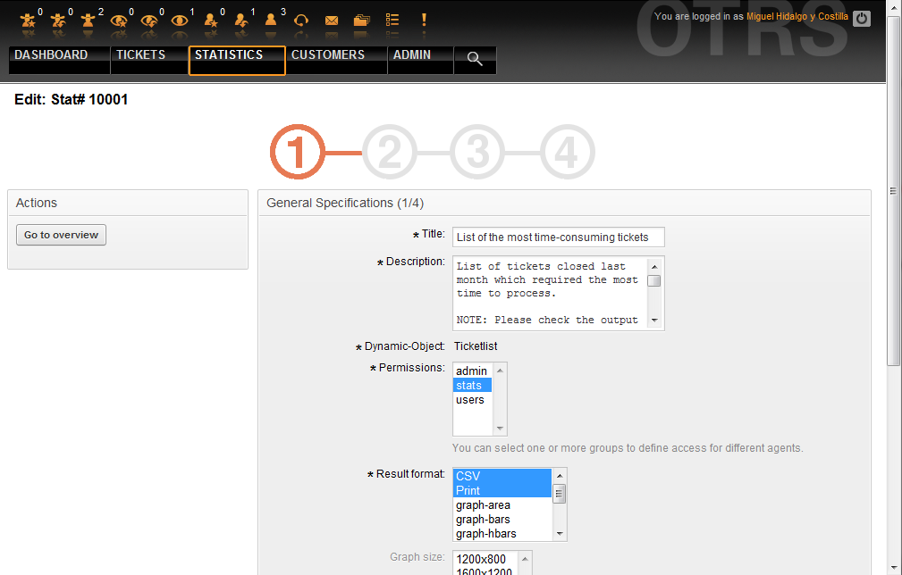
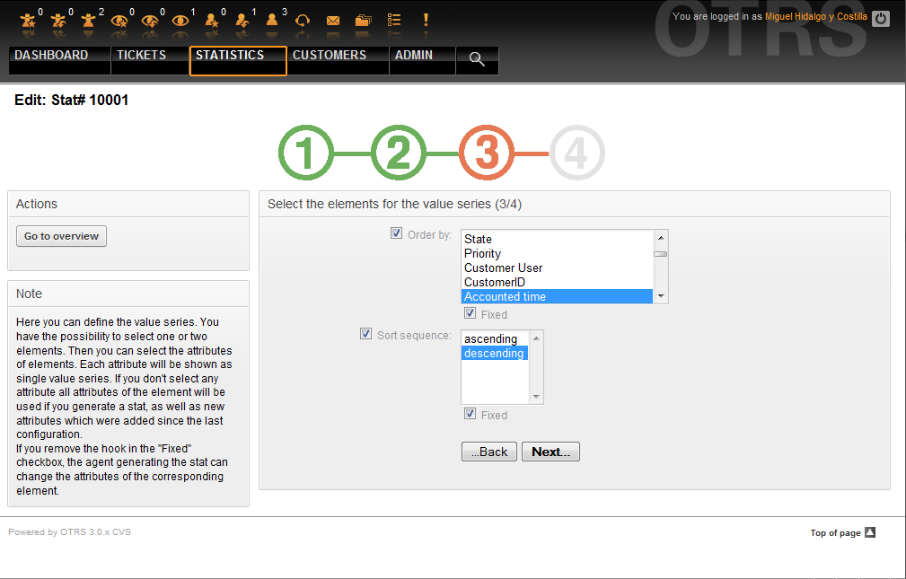

Inhaltsverzeichnis
Das OTRS-Statistikmodul enthält Funktionen, um betriebliche Kennziffern zu überwachen und angepasste Reports der Verwendung von OTRS zu erstellen. In OTRS wird der Begriff "Stat/Statistik" für einen Report benutzt, der verschiedene Indikatoren abbildet.
Eine sinnvolle Konfiguration des OTRS-Statistikmoduls ist verbunden mit einer Vielzahl von Anforderungen und Überlegungen. Darin eingeschlossen sind die auszuwertenden Module von OTRS, Benutzerrechte, zu berechnende Indikatoren und ihre Komplexitätsgrade, eine einfache Konfiguration des Statistikmoduls, Geschwindigkeit und Effizienz der Berechnungen, und die Unterstützung verschiedener Ausgabevarianten.
Um komplexe Statistiken abzubilden, besteht ferner die Möglichkeit statische Elemente zu integrieren (Dateien, die die Funktionalität des Statistik-Moduls um ganz spezifische Anforderungen ergänzen).
Wenn man als Agent angemeldet ist, erscheint der Menüpunkt "Statistik" mit verschiedenen Unterpunkten, siehe Abb.
Abb.: Statistikmenü.
Folgende Optionen sind im Statistikmenü verfügbar:
Übersicht. Zeigt eine Liste vorkonfigurierter Reports an.
Neu. Benötigt "rw"-Rechte.
Importieren. Benötigt "rw"-Rechte.
Die Auswahl von "Statistik" und des Unterpunktes "Übersicht" ruft den Übersichtsbildschirm auf. Hier wird dem Agenten eine Liste von vorkonfigurierten Reports präsentiert, die er verwenden kann.
Abb.: Übersicht der Standardstatistiken.
Folgende Informationen sind den in der Übersicht aufgelisteten Statistiken zu entnehmen:
Stat#. Eindeutige Statistiknummer.
Titel. Titel der Statistik.
Objekt. Objekt, das für die Generierung der Statistik verwendet wird. Wenn es sich um eine statische Statistik handelt, wird kein Objekt angezeigt, da kein dynamisches Objekt zur Generierung verwendet wird.
Beschreibung. Ein Auszug aus der Beschreibung der Statistik.
Wenn das Statistikmodul installiert ist, enthält es einige vorkonfigurierte Reports. Diese können in der Übersicht aufgerufen werden. Wenn die Liste zu lang für eine Seite wird, kann der Agent durch die verschiedenen Seiten blättern. Die Liste kann durch klick auf den Spaltenkopf wie gewünscht geordnet werden. Um einen bestimmten Report zu erzeugen, klicken Sie auf die Statistiknummer des Reports in der Übersicht. Dadurch gelangen Sie in die Ansichtsseite des Reports.
Aufgabe der "Ansehen"-Oberfläche ist es, dem Agent einen Überblick über die Vorkonfiguration der Statistik zu ermöglichen.

Abb.: Ansicht einer Statistik.
Konfigurationseinstellungen für einen Report können in den Optionen der Ansichtsseite eingestellt werden. Der Ersteller des Reports und jeder Agent mit den benötigten Rechten kann diese Einstellungen vornehmen.
Konkret wird auf dieser Seite folgendes angezeigt:
Verfügbare Aktionen:
Zurück zur Übersicht. Zurück zur Übersichtsliste der Reports.
Bearbeiten. Die aktuelle Statistik bearbeiten (benötigt "rw"-Rechte).
Löschen. Die aktuelle Statistik löschen (benötigt "rw"-Rechte).
Konfiguration exportieren. Exportieren einer Statistikkonfiguration mittels Dateidownload ("rw"-Rechte erforderlich).
Verwendung: Mittels der Export- und Importfunktionen können Statistiken bequem auf Testsystemen entworfen und getestet werden, um dann anschließend einfach in das Produktivsystem integriert zu werden.
Report-Details:
Statistik-Nr.. Die Nummer der Statistik.
Titel. Titel der Statistik.
Objekt. Objekt, das für die Generierung der Statistik verwendet wird.
Beschreibung. Ein Auszug aus der Beschreibung der Statistik.
Format. Ausgabeformat der Statistik. Hierbei stehen je nach Konfiguration folgende Ausgabeformate zur Verfügung:
CSV.
Drucken.
Liniendiagramm.
Balkendiagramm.
Balkendiagramm (horizontal).
Punktdiagramm
Linienpunktdiagramm.
Flächendiagramm.
Tortendiagramm.
Grafikgröße. Mögliche Größe der Grafik bzw. des Diagramms. Diese Auswahl bzw. Anzeige erscheint nur, wenn die Statistikvorkonfiguration ein Diagramm vorsieht bzw. ermöglicht. Alle generell verwendbaren Grafikgrößen werden durch den otrs-Admin in der SysConfig definiert. Beim Konfigurieren der Statistiken kann dann der Ersteller alle relevanten Formate vorselektieren.
Zeilensummierung. Gibt an, ob die Statistik durch eine Spalte ergänzt wird, deren Zellen die Summe der jeweiligen Zeile darstellt.
Spaltensummierung. Angabe, ob die Statistik durch eine Zeile ergänzt wird, deren Zellen die Summe der jeweiligen Spalte beinhaltet.
Cache. Gibt an, ob die errechneten Statistiken im Dateisystem gecacht werden.
Gültig. Ist eine vorkonfigurierte Statistik erst im Entstehen oder darf sie aus bestimmten Gründen temporär nicht mehr ausgeführt werden so wird das Element "Gültig" auf "ungültig" gesetzt. Ferner wird dadurch die Schaltfläche "Start" rechts unten am Ende des Block ausgeblendet. Ein Generieren der Statistik ist somit nicht möglich.
Erstellt. Erstellungszeit der Statistik.
Erstellt von. Agent, der die Statistik erstellt hat.
Geändert. Letzte Änderungszeit der Statistik.
Geändert von. Agent, der die Statistik zuletzt geändert hat.
X-Achse. Diese Option erlaubt es dem Agenten, die X- und Y-Achsen zu vertauschen (Diese Funktion muss vom OTRS-Administrator freigeschaltet werden).
Nach den allgemeinen Angaben sieht der Agent die Angaben zur eigentlichen Statistik. Hierbei kommen grundsätzlich zwei verschiedene Anzeigen zum Einsatz:
Anzeige statischer Statistiken. Statische Report-Generatoren können in die Statistik integriert werden (siehe unten).
Abb.: Ansicht der statischen Statistik.
Anzeige dynamischer Statistiken Dynamische Statistiken können auf zweierlei Weise angezeigt werden:
Unveränderbare Einstellungen. In diesem Fall hat der Ersteller der Statistik dem Agent, der eine Statistik generieren will, keinen Freiraum für Veränderungen gelassen.
Veränderbare Einstellungen. Bei derartigen Statistiken ist es dem Agent noch erlaubt die vorkonfigurierte Statistik zu verändern.
Um eine Statistik zu generieren, muss abschließend lediglich der "Start"-Button am rechten unteren Ende des Blocks gedrückt werden. Sollte einmal der "Start"-Button nicht sichtbar sein, kann dies zwei Ursachen haben:
die Statistik wurde auf ungültig gesetzt und damit deaktiviert.
die Statistik wurde nicht sauber konfiguriert und ist noch nicht lauffähig. Ist dies der Fall, findet man die nötigen Informationen im Notification-Bereich von OTRS (unterhalb der Navigationsleiste).
Bei falschen Einstellungen auf der Ansichtsseite wird nach Drücken des "Start"-Button wieder die Ansichtseite gezeigt und im Notificationbereich darauf hingewiesen, welche Eingaben falsch waren.
Agenten mit Schreibrechten können existierende Report-Konfigurationen bearbeiten, indem sie die Bearbeitungsmaske des Statistikmoduls aufrufen. Altertativ können sie einen neuen Report erstellen. Die zugehörigen Masken können folgendermaßen aufgerufen werden:
Durch den Knopf "Bearbeiten" in der Statistikansicht.
Durch den "Neu"-Link im Statistikmenü der Navigationsleiste, oder durch den Knopf "Hinzufügen" in der Übersichtsseite.
Das Bearbeiten der Statistiken erfolgt in vier Schritten mit Hilfe eines Assistenten bzw. Wizards:
Allgemeine Angaben zur Statistik.
Festlegen des Elements für die X-Achse.
Festlegen der Wertereihen.
Festlegen der Einschränkungen des Reports.
Die Punkte 2-4 werden nur für dynamisch zusammengestellte Statistiken benötigt. Benutzt man eine statische Statistik ist man mit dem Einfügen der allgemeinen Angaben in Punkt 1. bereits fertig.
Für alle Eingabeoberflächen des Statistik-Moduls gilt: Im Anschluss an das jeweilige Eingabeformular findet der Benutzer Informationen zur Bedienung der Seite.
Sollte es dennoch zu fehlerhaften Eingaben kommen, wird die zuvor bearbeitete Oberfläche wieder geladen. Dabei wird die Seite um Informationen zur fehlerhaften Eingabe ergänzt. Diese Informationen findet man im Notificationbereich von OTRS. Erst nachdem ein Formular korrekt ausgefüllt wurde, gelangt man zur nächsten Eingabeoberfläche.
Allgemeine Angaben. Dies ist die erste Seite des Assistenten.
Abb.: Allgemeine Angaben zur Statistik bearbeiten.
Folgende allgemeine Angaben und Einstellungen der Statistik können geändert werden:
Titel. Er sollte kurz und prägnant die Aufgabe der Statistik wiedergeben.
Beschreibung. Hier werden Informationen eingetragen, die einen tieferen Einblick in die Aufgabenstellung, Art der Konfigurationsparameter, usw. erlauben.
Dynamisches Objekt. Sollte die OTRS-Installation über mehrere dynamische Objekte verfügen, kann hier das gewünschte Objekt ausgewählt werden. Die Objekte sind jeweils auf die Anforderungen des entsprechenden Moduls ausgelegt.
Statische Datei. An dieser Stelle kann eine gewünschte statische Datei ausgewählt werden. Diese Auswahl wird für gewöhnlich nicht erscheinen, da nur die statischen Dateien angezeigt werden, die noch keiner Statistik zugeordnet wurden! Wenn der Punkt "Statische Datei" angezeigt wird, ist es wichtig im Formular durch die Auswahl des Optionsfelds die gewünschte Generierungsart auszuwählen (Dynamisch durch ein dynamisches Objekt oder statisch durch eine Datei). Wird eine statische Datei ausgewählt entfallen die Eingabeoberflächen 2-4, da die statische Datei die nötigen Konfigurationen bereits mitbringt.
Rechtevergabe. Durch die Rechtevergabe kann man regeln, welche Gruppen (und dadurch welche Agents) die vorkonfigurierten Statistiken später ansehen und generieren können. So können die verschiedenen Statistiken auf die verschiedenen Abteilungen und Arbeitsgruppen aufgeteilt werden, die diese benötigen. Eine Mehrfachauswahl ist dabei möglich.
Beispiel 1: Die Gruppe "stats" wurde ausgewählt. Der Report kann von allen Nutzern verwendet werden, die mindestens "ro"-Rechte für die Gruppe "stats" haben. Diese Berechtigung ist die Voreinstellung.
Beispiel 2: Es wurde eine Gruppe namens "sales" selektiert. Alle Benutzer die ro-Rechte in der Gruppe "sales" haben können nun diese Statistik im Ansichtsmodus sehen und generieren. Anderen Benutzern, die in der Lage sind Statistiken zu generieren wird dann diese Statistik nicht angeboten.
Format. Ausgabeformat der Statistik. Hierbei stehen je nach Konfiguration folgende Ausgabeformate zur Verfügung:
CSV.
Drucken.
Liniendiagramm.
Balkendiagramm.
Balkendiagramm (horizontal).
Punktdiagramm.
Linienpunktdiagramm.
Flächendiagramm.
Tortendiagramm.
Grafikgröße. Hier kann ausgewählt werden, in welchen Größen (Pixel) die Diagramme ausgegeben werden dürfen. Diese Auswahl ist nur sinnvoll, wenn unter dem Punkt "Format" ein grafisches Ausgabeformat ausgewählt wurde. Alle generell verwendbaren Grafikgrößen werden durch den OTRS-Admin in der SysConfig definiert. Bei der Konfiguration der Statistiken kann der Ersteller alle relevanten Formate vorselektieren.
Zeilensummierung. Wird im "Ja" ausgewählt, wird die Statistik durch eine Spalte ergänzt, deren Zellen die Summe der jeweiligen Zeile darstellt.
Spaltensummierung. Angabe, ob die Statistik durch eine Zeile ergänzt wird, deren Zellen die Summe der jeweiligen Spalte beinhaltet.
Cache. Wird im "Ja" ausgewählt, werden die errechneten Statistiken im Dateisystem gecacht. Dies spart Rechenleistung und Zeit, sollte genau diese Statistik wieder aufgerufen werden. Diese Funktion ist jedoch nur sinnvoll, wenn sichergestellt ist, dass sich der Inhalt der Statistik nicht mehr ändert. Dies ist genau zu prüfen, bevor man die Cachingfunktion nutzt.
Caching wird automatisch verhindert, wenn die Statistik keinerlei Zeitangaben enthält (es kommen laufend neue Daten hinzu) oder wenn eine Zeitangabe in der Zukunft liegt.
Sollte eine Statistik zwischenzeitlich wieder bearbeitet werden, werden alle gecachten Daten wieder gelöscht.
Gültig. Ist eine vorkonfigurierte Statistik erst im Entstehen oder darf sie aus bestimmten Gründen temporär nicht mehr ausgeführt werden so wird das Element "Gültig" auf "ungültig" gesetzt. Ferner wird dadurch die Schaltfläche "Start" rechts unten am Ende des Block ausgeblendet. Ein Generieren der Statistik ist somit nicht möglich.
Definition des Elements für die X-Achse. Hier wird eingestellt welches Element für die Darstellung der X-Achse verwendet wird, bzw. bei Tabellen, welche Spaltenbezeichnung die Statistik bekommt.

Abb.: Definition des Elements für die X-Achse.
Als erstes wählt man ein Element per Optionsfeld aus. Anschließend müssen zwei oder mehr Attribute des Elements selektiert werden. Werden keine Attribute des Elements ausgewählt, werden alle Attribute verwendet, auch solche die nach der Konfiguration der Statistik hinzukommen.
Entfernt man den Haken "Fixiert" in der Checkbox, kann der Agent, der die Statistik erstellt, die Attribute des entsprechenden Elements in der "Ansehen"-Oberfläche verändern.
Eine Besonderheit stellen Zeitelemente dar, hier ist die Zeitspanne und die Skalierung anzugeben. Die Art und Anzahl der Elemente ergibt sich durch das verwendete dynamische Objekt und ist von Objekt zu Objekt verschieden.
Wurden alle Eingaben richtig getätigt, gelangt man nach der Auswahl des "Weiter" Schalters zu dem Formular "Wertereihen". Ebenfalls gibt es die Möglichkeit, einen Bearbeitungsschritt zurück zu gehen und nochmals die Oberfläche "Allgemeine Angaben" zu bearbeiten.
Wertereihen.
Im dritten Schritt der Vorkonfiguration einer Statistik werden die Wertereihen der Statistik festgelegt. Sie bilden später die einzelnen Grafen des Diagramms (grafische Darstellung) oder die einzelnen Reihen (tabellarische Darstellung).
Abb.: Festlegen der Wertereihen.
Wird ein Element selektiert, entspricht jedes ausgewählte Attribut einer Wertereihe.
Beispiel 19.1. Festlegen einer Wertereihe bei einem Element
Element Queue:
Wertereihe 1 = Raw
Wertereihe 2 = Junk
....
Werden zwei Elemente selektiert, wird jedes ausgewählte Attribut des ersten Elements kombiniert mit einem Attribut des zweiten Elements zu einer Wertereihe.
Beispiel 19.2. Festlegen einer Wertereihe bei zwei Elementen
Element 1 Queue, Element 2 Status:
Wertereihe 1 = Raw - offen
Wertereihe 2 = Raw - erfolgreich geschlossen
Wertereihe 3 = Junk - offen
Wertereihe 4 = Junk - erfolgreich geschlossen
Die Auswahl von drei oder mehr Elementen ist nicht sinnvoll und wird deshalb durch eine Fehlermeldung verhindert.
Ferner gelten noch die gleichen Bedingungen zur Auswahl der Attribute und zur "Fixiert" Checkbox wie bei der "X-Achsen" Auswahl.
Werden keine Attribute des Elements ausgewählt, werden alle Attribute verwendet, auch solche die nach der Konfiguration der Statistik hinzukommen.
Entfernt man den Haken "Fixiert" in der Checkbox, kann der Agent der die Statistik erstellt, die Attribute des entsprechenden Elements verändern.
Festlegen der Einschränkungen. Vierter und letzter Schritt bei der Vorkonfiguration ist das Festlegen der Einschränkungen. Hier ist es möglich die Ergebnisse einer Statistik durch die Angabe von Bedingungen einzuschränken. Vergleichbar ist dies mit Eingaben in eine Such-Oberfläche.

Abb.: Festlegen der Einschränkungen.
Nachdem man alle Einschränkungen getätigt hat, drückt man den Button "Abschließen". Dadurch beendet man die Vorkonfiguration der Statistik und gelangt in die "Ansehen" Oberfläche.
Durch die Auswahl des "Import"-Menüpunkts im Statistikmenü der Navigationsleiste oder durch den "Import"-Knopf in der Übersichtsmaske gelangt man in die Importoberfläche ("rw"-Rechte erforderlich).

Abb.: Die Import-Oberfläche.
Durch sie können Statistiken importiert werden. Dies ist im Zusammenhang mit der Exportfunktion des Moduls eine sehr hilfreiche Funktionalität. So können Statistiken bequem auf Testsystemen entworfen und getestet werden, um sie später auf dem Produktivsystem zu importieren.
Der Import geschieht dabei ganz einfach durch einen Dateiupload. Anschließend gelangt man automatisch in die Detailansicht der importierten Statistik.